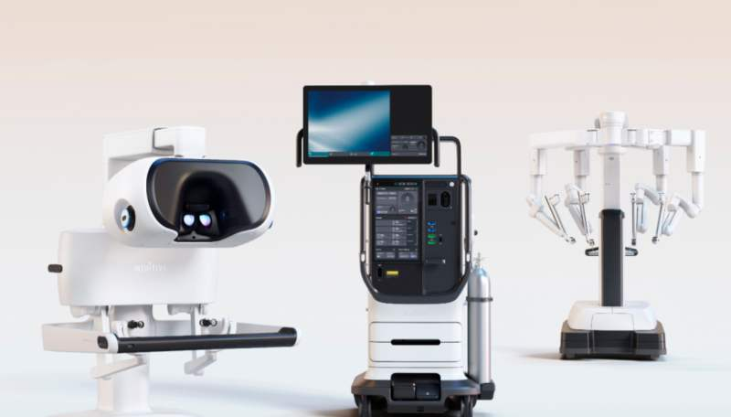
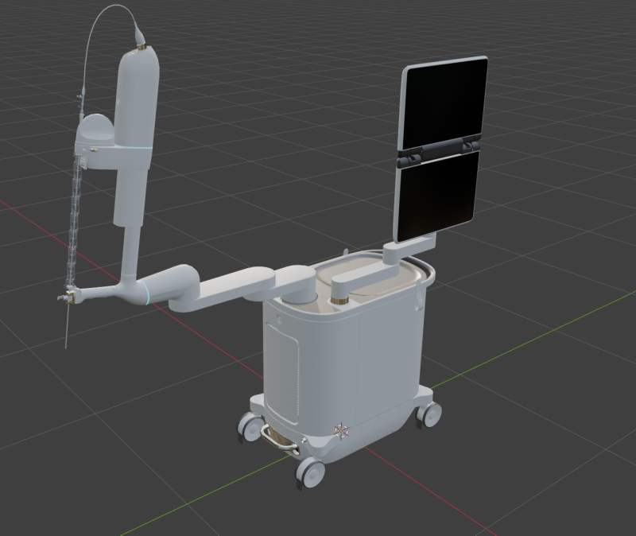
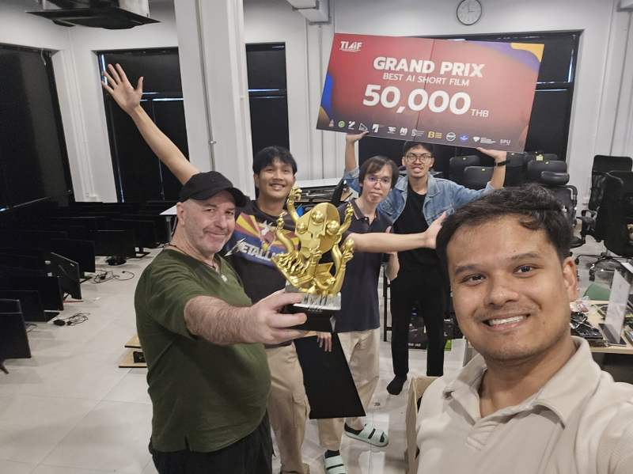
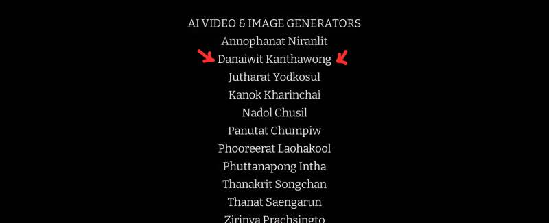
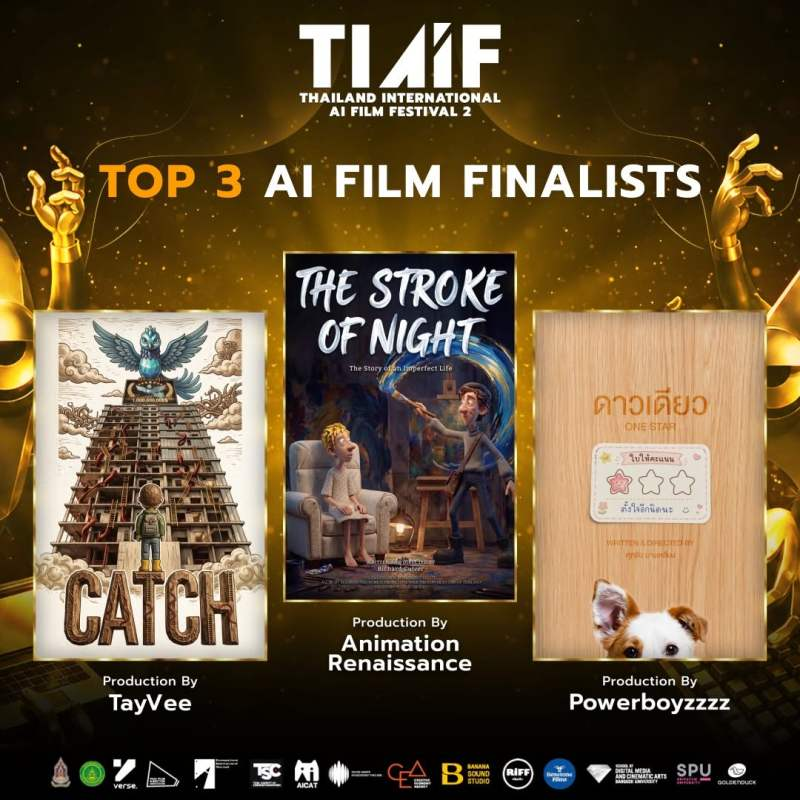
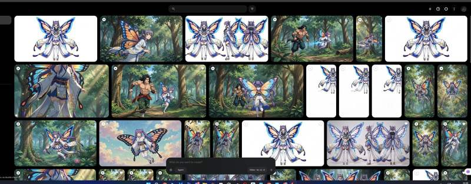
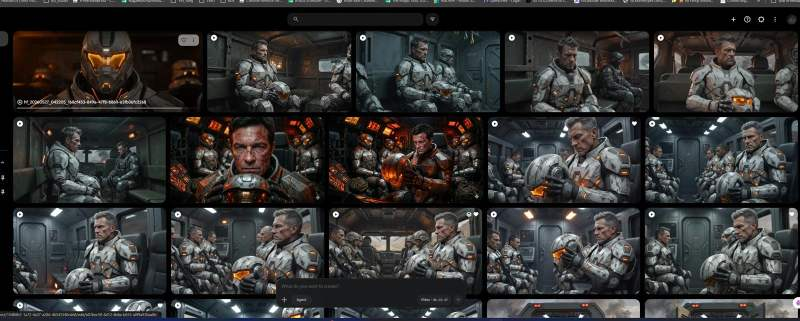

แฟ้มสะสมผลงาน 2569 (Selected Works 2026)
ดนัยวิทย์ กันทวงค์
นักสร้างโมเดล 3D และสื่อที่ใช้ AI ช่วยผลิต
โมเดล 3D และงานภาพที่ใช้ AI
ขึ้นโมเดล Hard-Surface และทำวัสดุด้วย Blender สำหรับอุปกรณ์แพทย์ หุ่นยนต์ผ่าตัด โดรน FPV และชิ้นส่วนเชิงกล
ตัวอย่างงานภาพและวิดีโอที่ใช้ AI ช่วยผลิต รวมถึงบทบาทในทีมสร้างภาพและวิดีโอของ Animation Renaissance ในภาพยนตร์สั้น The Stroke of Night
โมเดลอุปกรณ์ทางการแพทย์และหุ่นยนต์ผ่าตัดด้วย Blender ตัวอย่างประกอบด้วยภาพโมเดล Wireframe และภาพนำเสนอวัสดุ โดยแยกบทบาทการสร้างโมเดลออกจากการพัฒนาระบบโต้ตอบในเอนจิน




รายละเอียดรูปทรง ชิ้นส่วนเชิงกล โครงข่ายโมเดล และการนำเสนอวัสดุของอุปกรณ์ทางการแพทย์
ตัวอย่างจากคอลเลกชันโมเดลโดรน 105+ แบบ แสดงเฟรม แคนโนปี และชิ้นส่วนเชิงกล พร้อมรายละเอียดวัสดุและภาพนำเสนอ
ใบประกาศระบุ Animation Renaissance เป็นผู้รับรางวัล Grand Prix Best AI Short Film สำหรับเรื่อง "The Stroke of Night" เครดิตทีมระบุชื่อ Danaiwit Kanthawong ในกลุ่ม AI Video & Image Generators




ตัวอย่างการศึกษากระบวนการผลิตภาพยนตร์ด้วย AI การทดลองภาพ การตัดต่อ และการเล่าเรื่อง ภาพประกอบไม่ระบุว่าผมสร้างทุกช็อตหรือรับผิดชอบทุกขั้นตอนเพียงคนเดียว

คลิกเพื่อรับชมบน YouTube ↗

